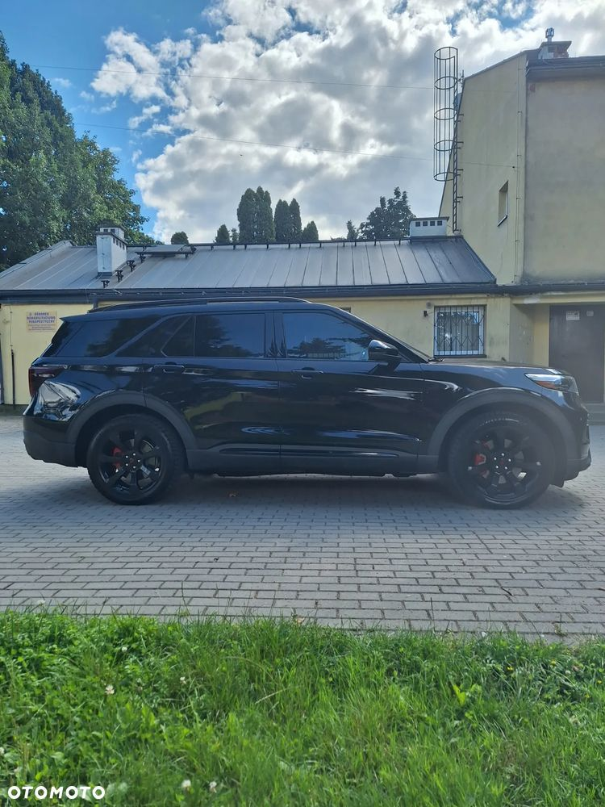
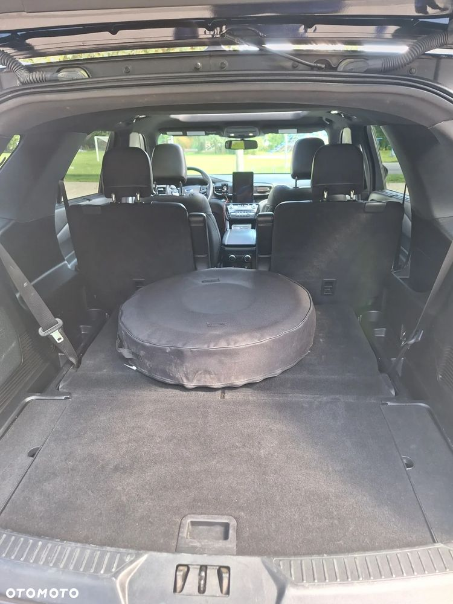
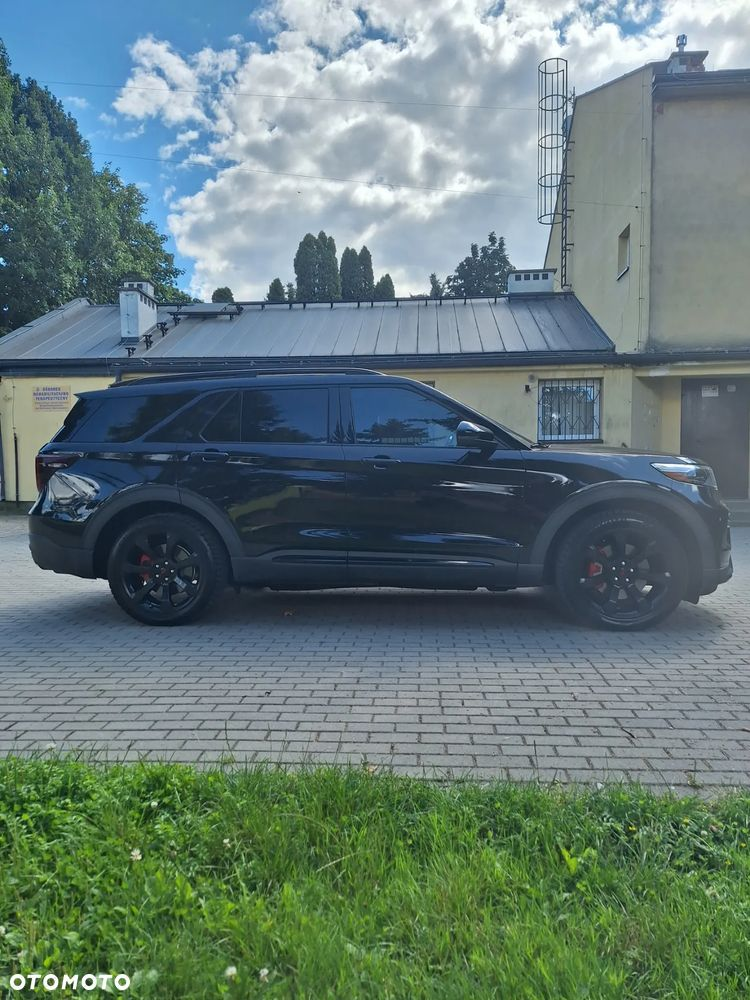
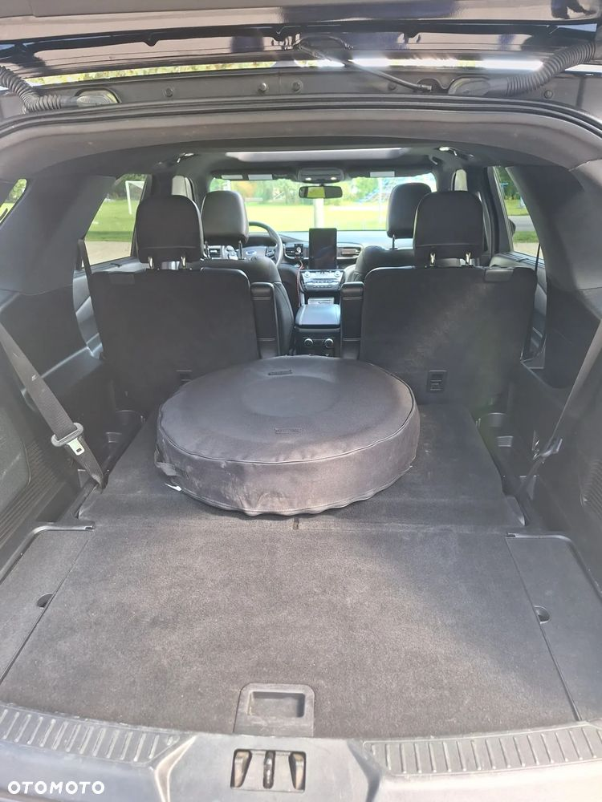
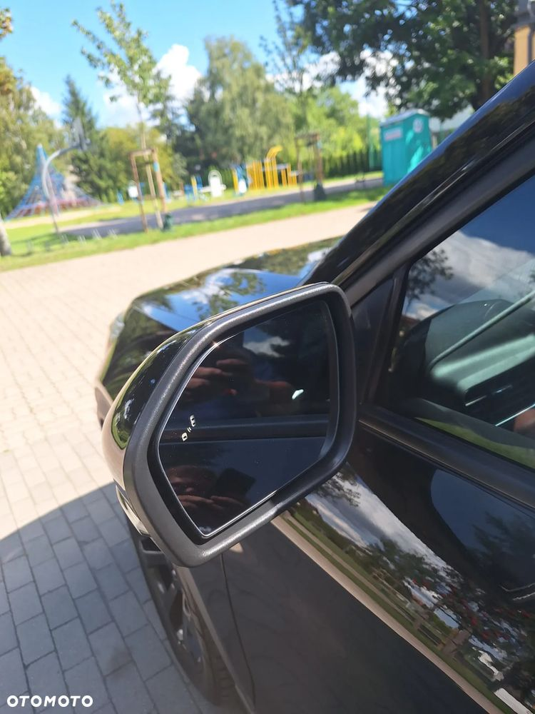
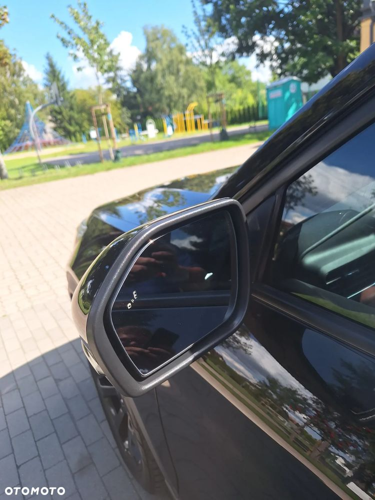
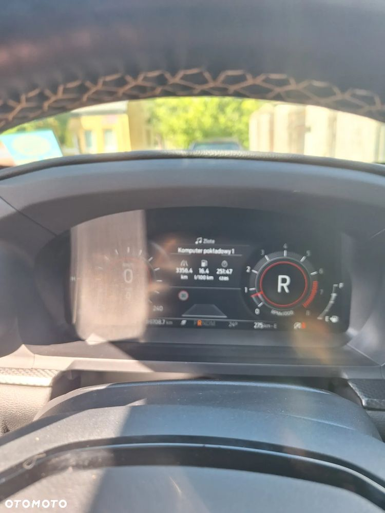
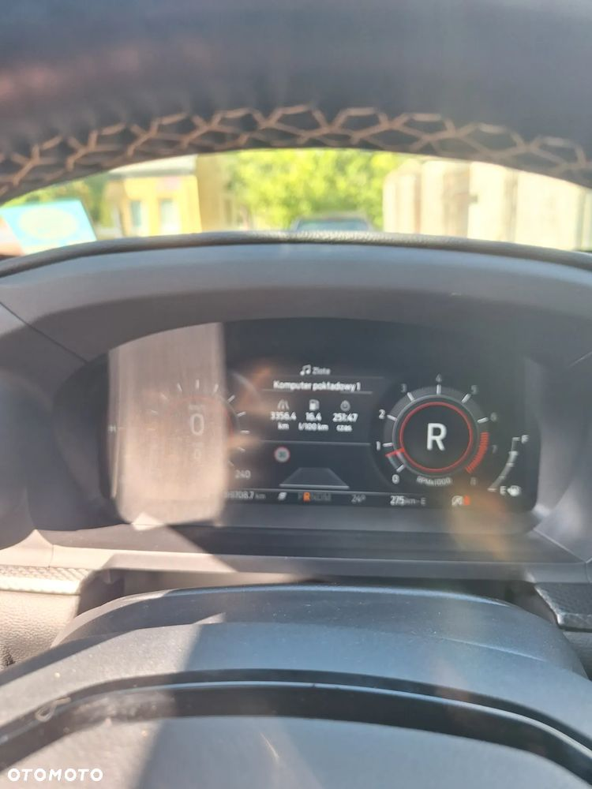

Ford Explorer najbogatsza wersja wyposażenia full opcja ST performance 400 KM napęd 4×4 skrzynia automatyczna 10 biegowa założona instalacja gazowa KME za ponad 10 000 zł Samochód sprowadzony prywatnie dla mnie a nie na żaden handel przez profesjonalną firmę z niewielkim uszkodzeniem tylnego błotnika( wszystkie zdjęcia z aukcji przed naprawą w trakcie naprawy do wglądu jak również pełna dokumentacja firmy która mi sprowadzała auto na każdym etapie podróży samochodu do Polski) samochód doposażyłem maksymalnie z myślą o sobie bo nie myślałem że przyjdzie mi go tak szybko wystawić na sprzedaż przejechałem nim około 10 tyś. Km (auto w ciągłej eksploatacji więc przebieg rośnie ) spisuje się rewelacyjnie i ściąga wzrok swoim wyglądem. Auto dopracowałem w każdym detalu przyciemnioe tylne lampy na felgach oryginalne zaślepki ST czarne logo Ford położona powłoka ceramiczna na cały samochód i plastiki na trzy lata lub 75 000 km oraz na szyby tak zwaną niewidzialną wycieraczkę koszt zabezpieczenia ceramicznego auta to kolejne 4000 zł został zakupiony komplet nowiutkich opon całorocznych i oczywiście zrobiona pełna konfiguracja na Europę łącznie ze sterowaniem głosem. Na moje zamówienie zciągnięty ze stanów sportowy układ wydechowy BORLA dedykowany specjalnie dla wersji ST za cenę 12000 zł (brzmi naprawde fajnie) wymieniony olej w eskrzyni jak również w obu Mostach i silniku za prawie 4000 zł auto jak na swoją wagę prawie dwie i pół tony i 405 KM mocy ma spalanie gazu po trasie 15 l natomiast spalanie gazu w mieście jest rzędu 17.5 l auto w stu procentach sprawne muszę sprzedać mimo że szykawałem go dla siebie cenę uważam za atrakcyjną w stosunku do tego co zostało zrobione przy aucie a do ceny nie doliczyłem własnej pracy którą włożyłem w to auto ale warto było bo uważam że samochód jest unikatowy. Tak dopracowanego samochodu nie ma na pewno w Polsce. Auto zostało również zaczipowane aktualnie posiada około 460 KM silnik i skrzynia w żaden sposób nie jest przeciążona


 

 



 
